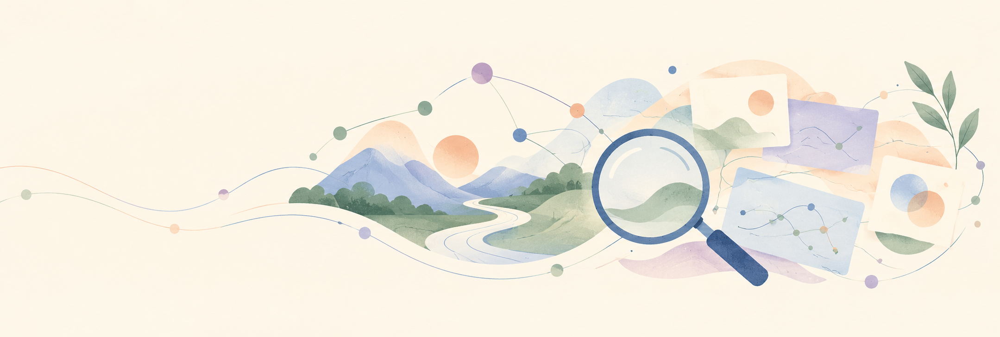

Hi, I'm Isha.
I work on Search and search indexing at eBay. Search drives roughly 80% of eBay's revenue across an inventory of more than 4.5 billion items. I build the infrastructure that keeps search fast, reliable, and cost-efficient.
Before eBay, I spent nearly three years at Walmart Global Tech building scalable APIs, GraphQL Federation services, and data pipelines supporting 2.2M+ associates. My path has also taken me through research at the University of Utah's Scientific Computing and Imaging Institute, where I built tools for visualizing computation graphs, and through engineering roles at Mastercard and Citibank.
Lately I've been especially interested in AI developer tooling, particularly building MCP servers, Claude skills, and agent workflows that make engineers' day-to-day work easier. I hold a Master's in Computer Science from the University of Utah.
What I work on
Search infrastructure
Indexing pipelines, sharding, and latency work on large-scale search systems.
Distributed backends
Java, Spring Boot, Kafka, GraphQL Federation, and Elasticsearch services built for scale.
AI developer tooling
MCP servers, Claude skills, and agent workflows that automate engineering work.
Selected work
Cozy House
A slow-living 3D home for June, Theo, and their cats. Explore the project →
MOVIZ
Interactive visualization for scientific model graphs. View project →
Published research
Work on crisis communication and facial expression recognition. Read papers →